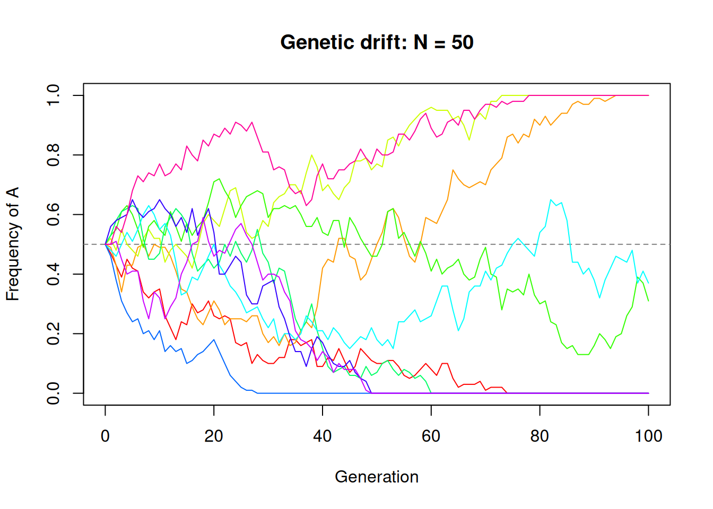
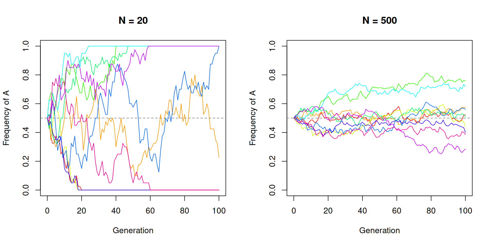
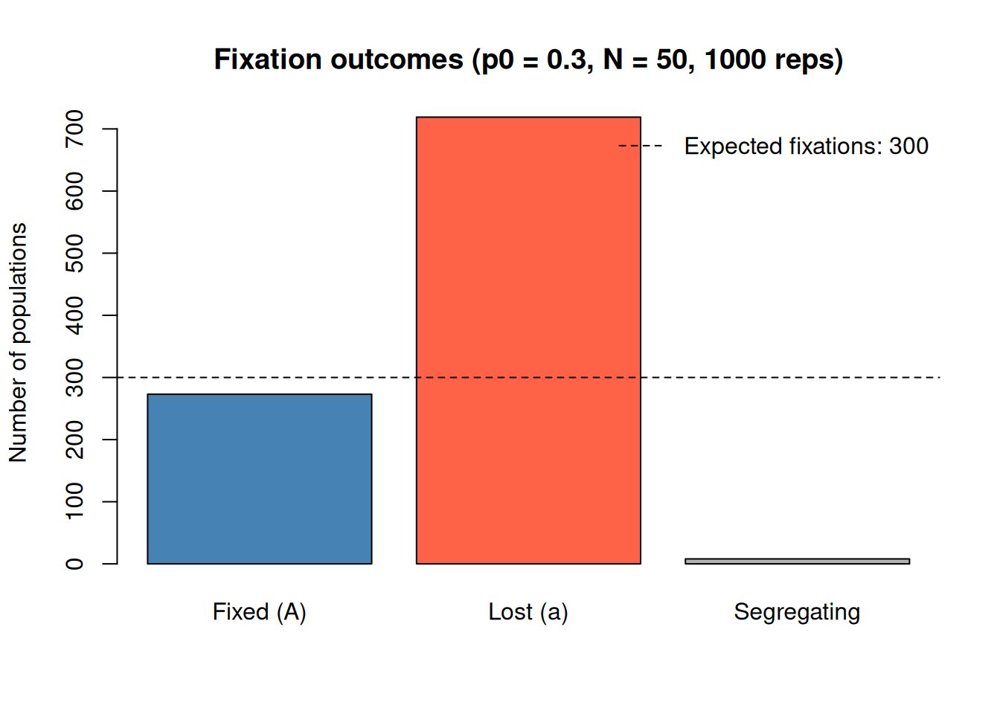
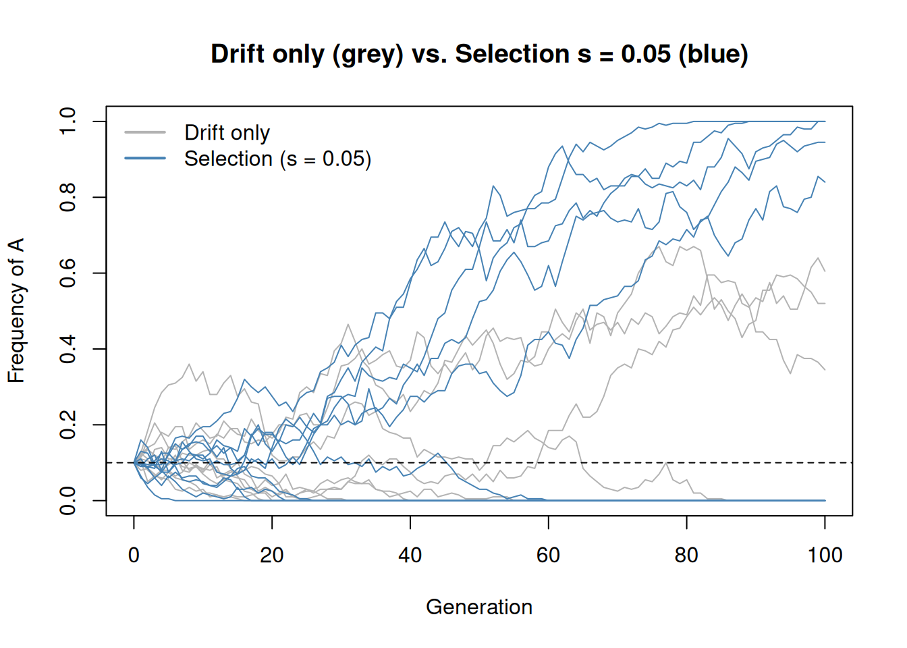
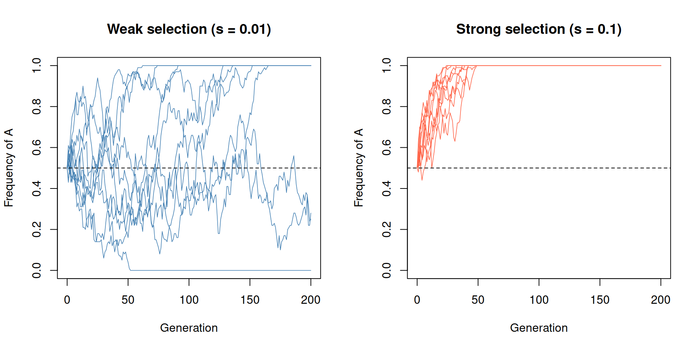
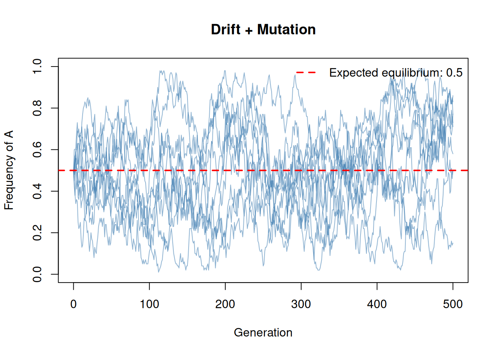
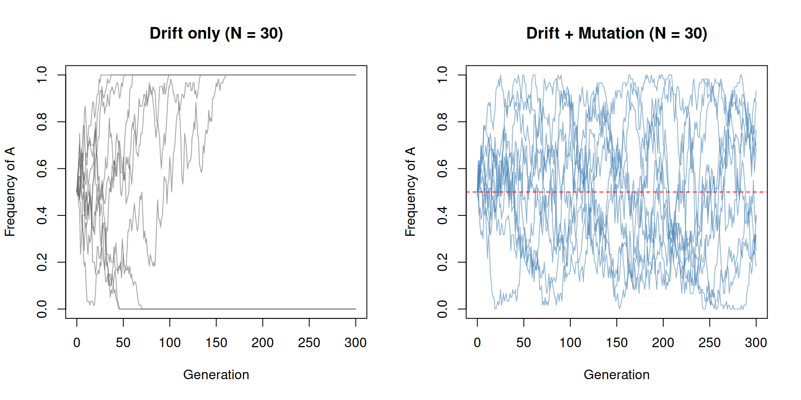
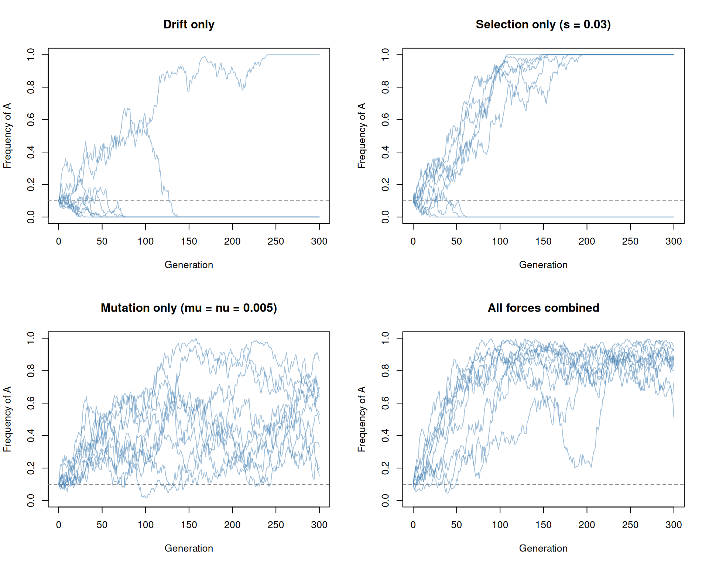

Last updated: 2026-02-16
Checks: 7 0
Knit directory: muse/
This reproducible R Markdown analysis was created with workflowr (version 1.7.2). The Checks tab describes the reproducibility checks that were applied when the results were created. The Past versions tab lists the development history.
Great! Since the R Markdown file has been committed to the Git repository, you know the exact version of the code that produced these results.
Great job! The global environment was empty. Objects defined in the global environment can affect the analysis in your R Markdown file in unknown ways. For reproduciblity it’s best to always run the code in an empty environment.
The command set.seed(20200712) was run prior to running
the code in the R Markdown file. Setting a seed ensures that any results
that rely on randomness, e.g. subsampling or permutations, are
reproducible.
Great job! Recording the operating system, R version, and package versions is critical for reproducibility.
Nice! There were no cached chunks for this analysis, so you can be confident that you successfully produced the results during this run.
Great job! Using relative paths to the files within your workflowr project makes it easier to run your code on other machines.
Great! You are using Git for version control. Tracking code development and connecting the code version to the results is critical for reproducibility.
The results in this page were generated with repository version fd05fc4. See the Past versions tab to see a history of the changes made to the R Markdown and HTML files.
Note that you need to be careful to ensure that all relevant files for
the analysis have been committed to Git prior to generating the results
(you can use wflow_publish or
wflow_git_commit). workflowr only checks the R Markdown
file, but you know if there are other scripts or data files that it
depends on. Below is the status of the Git repository when the results
were generated:
Ignored files:
Ignored: .Rproj.user/
Ignored: data/1M_neurons_filtered_gene_bc_matrices_h5.h5
Ignored: data/293t/
Ignored: data/293t_3t3_filtered_gene_bc_matrices.tar.gz
Ignored: data/293t_filtered_gene_bc_matrices.tar.gz
Ignored: data/5k_Human_Donor1_PBMC_3p_gem-x_5k_Human_Donor1_PBMC_3p_gem-x_count_sample_filtered_feature_bc_matrix.h5
Ignored: data/5k_Human_Donor2_PBMC_3p_gem-x_5k_Human_Donor2_PBMC_3p_gem-x_count_sample_filtered_feature_bc_matrix.h5
Ignored: data/5k_Human_Donor3_PBMC_3p_gem-x_5k_Human_Donor3_PBMC_3p_gem-x_count_sample_filtered_feature_bc_matrix.h5
Ignored: data/5k_Human_Donor4_PBMC_3p_gem-x_5k_Human_Donor4_PBMC_3p_gem-x_count_sample_filtered_feature_bc_matrix.h5
Ignored: data/97516b79-8d08-46a6-b329-5d0a25b0be98.h5ad
Ignored: data/Parent_SC3v3_Human_Glioblastoma_filtered_feature_bc_matrix.tar.gz
Ignored: data/brain_counts/
Ignored: data/cl.obo
Ignored: data/cl.owl
Ignored: data/jurkat/
Ignored: data/jurkat:293t_50:50_filtered_gene_bc_matrices.tar.gz
Ignored: data/jurkat_293t/
Ignored: data/jurkat_filtered_gene_bc_matrices.tar.gz
Ignored: data/pbmc20k/
Ignored: data/pbmc20k_seurat/
Ignored: data/pbmc3k.csv
Ignored: data/pbmc3k.csv.gz
Ignored: data/pbmc3k.h5ad
Ignored: data/pbmc3k/
Ignored: data/pbmc3k_bpcells_mat/
Ignored: data/pbmc3k_export.mtx
Ignored: data/pbmc3k_matrix.mtx
Ignored: data/pbmc3k_seurat.rds
Ignored: data/pbmc4k_filtered_gene_bc_matrices.tar.gz
Ignored: data/pbmc_1k_v3_filtered_feature_bc_matrix.h5
Ignored: data/pbmc_1k_v3_raw_feature_bc_matrix.h5
Ignored: data/refdata-gex-GRCh38-2020-A.tar.gz
Ignored: data/seurat_1m_neuron.rds
Ignored: data/t_3k_filtered_gene_bc_matrices.tar.gz
Ignored: r_packages_4.5.2/
Untracked files:
Untracked: .claude/
Untracked: CLAUDE.md
Untracked: analysis/.claude/
Untracked: analysis/bioc.Rmd
Untracked: analysis/bioc_scrnaseq.Rmd
Untracked: analysis/chick_weight.Rmd
Untracked: analysis/likelihood.Rmd
Untracked: analysis/modelling.Rmd
Untracked: analysis/wordpress_readability.Rmd
Untracked: bpcells_matrix/
Untracked: data/Caenorhabditis_elegans.WBcel235.113.gtf.gz
Untracked: data/GCF_043380555.1-RS_2024_12_gene_ontology.gaf.gz
Untracked: data/SeuratObj.rds
Untracked: data/arab.rds
Untracked: data/astronomicalunit.csv
Untracked: data/davetang039sblog.WordPress.2026-02-12.xml
Untracked: data/femaleMiceWeights.csv
Untracked: data/lung_bcell.rds
Untracked: m3/
Untracked: women.json
Unstaged changes:
Modified: analysis/isoform_switch_analyzer.Rmd
Modified: analysis/linear_models.Rmd
Note that any generated files, e.g. HTML, png, CSS, etc., are not included in this status report because it is ok for generated content to have uncommitted changes.
These are the previous versions of the repository in which changes were
made to the R Markdown (analysis/sim_evolution.Rmd) and
HTML (docs/sim_evolution.html) files. If you’ve configured
a remote Git repository (see ?wflow_git_remote), click on
the hyperlinks in the table below to view the files as they were in that
past version.
| File | Version | Author | Date | Message |
|---|---|---|---|---|
| Rmd | fd05fc4 | Dave Tang | 2026-02-16 | Simulating evolution |
Population genetics studies how allele frequencies change in populations over time. The key forces driving these changes are genetic drift (random sampling), natural selection (differential fitness), and mutation (introduction of new variants). Analytical solutions exist for simple models, but simulation is a powerful way to build intuition about how these forces interact, especially in finite populations where randomness plays a large role.
Here, we will simulate evolution using only base R. We will start with drift alone, then layer on selection and mutation to see how each force shapes allele frequency trajectories.
Genetic drift is the random change in allele frequencies that occurs
because populations are finite. Imagine a population of N
diploid individuals (so 2N gene copies). Each generation,
the next generation is formed by randomly sampling 2N
alleles from the current pool; like drawing marbles from a bag with
replacement.
The function sim_drift() below simulates this process.
It takes three parameters:
p0 - the initial frequency of allele A (between 0 and
1)N - the number of diploid individuals in the population
(so there are 2N gene copies)generations - the number of generations to
simulateEach generation, the function draws the number of A alleles in the
next generation from a binomial distribution:
rbinom(1, size = 2*N, prob = p), where p is
the current frequency of A. This is equivalent to each of the
2N gene copies in the new generation independently choosing
to be A with probability p - the same as sampling with
replacement from the current allele pool. The new frequency is then the
count divided by 2N. This random binomial sampling is what
produces genetic drift: even if the “true” probability of A is
p, the realised frequency will fluctuate due to finite
sampling.
Note that this model (the Wright-Fisher model) operates on the allele
pool directly and does not track individual genotypes (AA, Aa, aa). It
only tracks the frequency of allele A; the frequency of the other allele
(a) is implicitly 1 - p. This means a starting frequency of
p0 = 0.5 does not imply all individuals are heterozygous;
it simply means half the allele copies in the population are A, which
could arise from any combination of genotypes that produces that overall
frequency. The binomial sampling each generation implicitly assumes
random mating (Hardy-Weinberg).
Track the frequency of allele “A” (as opposed to “a”) over 100 generations.
set.seed(1984)
sim_drift <- function(p0, N, generations) {
freq <- numeric(generations + 1)
freq[1] <- p0
for (g in seq_len(generations)) {
n_A <- rbinom(1, size = 2 * N, prob = freq[g])
freq[g + 1] <- n_A / (2 * N)
}
freq
}
generations <- 100
p0 <- 0.5
N <- 50
# Run 10 replicate populations
n_reps <- 10
cols <- rainbow(n_reps)
plot(0:generations, sim_drift(p0, N, generations),
type = "n", ylim = c(0, 1),
xlab = "Generation", ylab = "Frequency of A",
main = paste("Genetic drift: N =", N))
abline(h = p0, lty = 2, col = "grey50")
for (i in seq_len(n_reps)) {
lines(0:generations, sim_drift(p0, N, generations), col = cols[i])
}
Each coloured line is an independent replicate population. They all start at the same frequency (0.5) but wander apart due to random sampling. Some may reach 0 (allele A lost) or 1 (allele A fixed).
Smaller populations experience stronger drift. Let’s compare
N = 20 versus N = 500.
par(mfrow = c(1, 2))
for (N_val in c(20, 500)) {
plot(0:generations, rep(NA, generations + 1),
type = "n", ylim = c(0, 1),
xlab = "Generation", ylab = "Frequency of A",
main = paste("N =", N_val))
abline(h = p0, lty = 2, col = "grey50")
for (i in seq_len(n_reps)) {
lines(0:generations, sim_drift(p0, N_val, generations), col = cols[i])
}
}
par(mfrow = c(1, 1))With N = 20 the trajectories are wild and several reach
fixation or loss within 100 generations. With N = 500 the
trajectories stay much closer to the starting frequency.
A fundamental result of drift theory is that the probability of an
allele eventually reaching fixation equals its starting frequency. If
allele A starts at frequency p, then across many replicate
populations, the fraction that fix for A should be approximately
p.
This is because drift is an unbiased process; on average, the allele frequency does not change from one generation to the next. The binomial sampling is centred on the current frequency, so drift has no preferred direction. However, once an allele reaches a frequency of 0 or 1, it stays there permanently (there is no mutation to bring it back in this model). These are absorbing states. So while drift does not favour either allele, every population will eventually wander into one of these absorbing states. The expected time to fixation scales with population size; specifically, the average time for a neutral allele to fix (conditional on fixation occurring) is approximately \(4N\) generations.
The fact that fixation probability equals starting frequency also has
a useful corollary: a new mutation present as a single copy in a diploid
population of size N has a fixation probability of \(1/(2N)\). In a population of 1,000
individuals, any given neutral mutation has only a 0.05% chance of
eventually reaching fixation - the vast majority are lost to drift.
Let’s test the fixation probability result by running 1,000 replicate populations and letting them run until fixation (or a maximum of 5N generations, which is usually enough).
set.seed(42)
p0 <- 0.3
N <- 50
max_gen <- 5 * 2 * N # 5 * 2N is a typical timescale for fixation
n_reps <- 1000
final_freq <- replicate(n_reps, {
traj <- sim_drift(p0, N, max_gen)
traj[max_gen + 1]
})
fixed_A <- sum(final_freq == 1)
lost_A <- sum(final_freq == 0)
still_seg <- n_reps - fixed_A - lost_A
barplot(
c("Fixed (A)" = fixed_A, "Lost (a)" = lost_A, "Segregating" = still_seg),
col = c("steelblue", "tomato", "grey70"),
main = paste0("Fixation outcomes (p0 = ", p0, ", N = ", N, ", ", n_reps, " reps)"),
ylab = "Number of populations"
)
abline(h = n_reps * p0, lty = 2)
legend("topright", legend = paste("Expected fixations:", n_reps * p0), lty = 2, bty = "n")
The number of populations that fixed for A is close to 273, compared to the expected value of 300. The remaining 8 populations haven’t reached fixation yet but would eventually do so given more time.
Natural selection occurs when different alleles confer different
fitness. We can model this by giving allele A a selective advantage
s. In a simple haploid model, the probability that an A
allele is sampled into the next generation is proportional to
1 + s relative to allele a (fitness 1).
The function sim_selection() below extends
sim_drift() by adding a selection step before the binomial
sampling. It takes an additional parameter s, the selection
coefficient, which represents the fitness advantage of allele A. The key
line is:
\[p_{\text{sel}} = \frac{p \cdot (1 + s)}{p \cdot (1 + s) + (1 - p)}\]
This is a fitness-weighted frequency. The numerator is the total
fitness contribution of A alleles (frequency p times
fitness 1 + s) and the denominator is the total fitness of
the entire population (A’s contribution plus a’s contribution at fitness
1). The result p_sel is always slightly higher than
p when s > 0, giving A a systematic push
upward each generation. This adjusted frequency is then passed to
rbinom() instead of the raw frequency, so selection biases
the sampling while drift still adds randomness around that biased
expectation.
For example, if p = 0.5 and s = 0.05, then
p_sel = (0.5 * 1.05) / (0.5 * 1.05 + 0.5) = 0.525 / 1.025 ≈ 0.512.
The shift is small in any single generation, but it accumulates over
time.
set.seed(1984)
sim_selection <- function(p0, N, generations, s) {
freq <- numeric(generations + 1)
freq[1] <- p0
for (g in seq_len(generations)) {
p <- freq[g]
# Fitness-weighted frequency
p_sel <- (p * (1 + s)) / (p * (1 + s) + (1 - p))
n_A <- rbinom(1, size = 2 * N, prob = p_sel)
freq[g + 1] <- n_A / (2 * N)
}
freq
}
generations <- 100
p0 <- 0.1
N <- 100
s <- 0.05
plot(0:generations, rep(NA, generations + 1),
type = "n", ylim = c(0, 1),
xlab = "Generation", ylab = "Frequency of A",
main = "Drift only (grey) vs. Selection s = 0.05 (blue)")
# Drift only (grey)
for (i in 1:10) {
lines(0:generations, sim_drift(p0, N, generations), col = "grey70")
}
# Selection (blue)
for (i in 1:10) {
lines(0:generations, sim_selection(p0, N, generations, s), col = "steelblue")
}
abline(h = p0, lty = 2)
legend("topleft", legend = c("Drift only", "Selection (s = 0.05)"),
col = c("grey70", "steelblue"), lwd = 2, bty = "n")
With selection, allele A tends to increase in frequency over time. Drift still introduces randomness, but the selective advantage biases the trajectory upward. Some drift-only replicates may coincidentally rise, but on average only the selected allele shows a consistent upward trend.
Selection is effective when s is much larger than
1/(2N). When s is on the order of
1/(2N) or smaller, drift dominates and selection is
essentially neutral. The intuition is that drift causes random frequency
changes of order \(1/\sqrt{2N}\) each
generation. If the deterministic push from selection (s) is
much smaller than this random noise, the allele behaves as though it
were neutral - selection simply cannot be “heard” above the stochastic
fluctuations.
The critical threshold is \(s \approx 1/(2N)\). This defines two regimes:
For example, with N = 50 the threshold is \(1/(2 \times 50) = 0.01\). A selection
coefficient of s = 0.01 would sit right at the boundary,
while s = 0.1 (ten times larger) would be firmly in the
selection-dominated regime. The simulation below compares these two
cases.
set.seed(42)
N <- 50
p0 <- 0.5
generations <- 200
par(mfrow = c(1, 2))
# Weak selection: s ~ 1/(2N)
s_weak <- 1 / (2 * N)
plot(0:generations, rep(NA, generations + 1), type = "n", ylim = c(0, 1),
xlab = "Generation", ylab = "Frequency of A",
main = paste0("Weak selection (s = ", round(s_weak, 4), ")"))
for (i in 1:10) {
lines(0:generations, sim_selection(p0, N, generations, s_weak), col = "steelblue", lwd = 0.8)
}
abline(h = p0, lty = 2)
# Strong selection: s >> 1/(2N)
s_strong <- 0.1
plot(0:generations, rep(NA, generations + 1), type = "n", ylim = c(0, 1),
xlab = "Generation", ylab = "Frequency of A",
main = paste0("Strong selection (s = ", s_strong, ")"))
for (i in 1:10) {
lines(0:generations, sim_selection(p0, N, generations, s_strong), col = "tomato", lwd = 0.8)
}
abline(h = p0, lty = 2)
par(mfrow = c(1, 1))With weak selection (left panel), the trajectories look almost indistinguishable from pure drift. With strong selection (right panel), allele A rapidly fixes in most replicates.
Mutation introduces new genetic variation. We model this with two
rates: mu (A mutates to a) and nu (a mutates
to A). After selection (or drift) determines the allele frequency,
mutation adjusts it:
\[p' = p \cdot (1 - \mu) + (1 - p) \cdot \nu\]
This means some A alleles become a (at rate mu) and some
a alleles become A (at rate nu). The first term, \(p \cdot (1 - \mu)\), is the fraction of A
alleles that survive without mutating. The second term, \((1 - p) \cdot \nu\), is the fraction of a
alleles that mutate into A. Together they give the post-mutation
frequency of A.
The function sim_drift_mutation() below adds two
parameters to the drift model:
mu - the per-generation probability that an A allele
mutates to a (forward mutation rate)nu - the per-generation probability that an a allele
mutates to A (back mutation rate)Each generation, the mutation formula is applied first to compute an
adjusted frequency p_mut, which is then passed to
rbinom() for the drift step. This ordering means mutation
shifts the expected frequency slightly before random sampling introduces
noise.
An important consequence of bidirectional mutation is that the system
has a stable equilibrium. Setting \(p' = p\) in the mutation equation and
solving gives \(\hat{p} = \nu / (\mu +
\nu)\). When mu and nu are equal, the
equilibrium is 0.5. Unlike pure drift, mutation prevents the allele from
ever permanently fixing or being lost - if A drifts to 0, the back
mutation rate nu reintroduces it; if A drifts to 1, the
forward rate mu erodes it. Typical mutation rates in
biology are very small (\(10^{-6}\) to
\(10^{-9}\) per base per generation),
but we use larger values here so the effect is visible over a tractable
number of generations.
set.seed(1984)
sim_drift_mutation <- function(p0, N, generations, mu, nu) {
freq <- numeric(generations + 1)
freq[1] <- p0
for (g in seq_len(generations)) {
p <- freq[g]
# Mutation
p_mut <- p * (1 - mu) + (1 - p) * nu
# Drift
n_A <- rbinom(1, size = 2 * N, prob = p_mut)
freq[g + 1] <- n_A / (2 * N)
}
freq
}
N <- 50
p0 <- 0.5
generations <- 500
mu <- 0.01
nu <- 0.01
# Expected equilibrium frequency: nu / (mu + nu)
p_eq <- nu / (mu + nu)
plot(0:generations, rep(NA, generations + 1), type = "n", ylim = c(0, 1),
xlab = "Generation", ylab = "Frequency of A",
main = "Drift + Mutation")
for (i in 1:10) {
lines(0:generations, sim_drift_mutation(p0, N, generations, mu, nu),
col = adjustcolor("steelblue", alpha.f = 0.6))
}
abline(h = p_eq, lty = 2, col = "red", lwd = 2)
legend("topright", legend = paste("Expected equilibrium:", p_eq),
lty = 2, col = "red", lwd = 2, bty = "n")
Mutation prevents fixation! Even in a small population, the allele frequency fluctuates around the equilibrium value \(\hat{p} = \nu / (\mu + \nu)\). With equal forward and backward mutation rates, this equilibrium is 0.5.
Without mutation, drift will eventually fix or lose alleles. With mutation, polymorphism is maintained. This is a fundamental distinction: drift alone is a process that destroys genetic variation (by pushing alleles to fixation or loss), while mutation is the ultimate source of new variation.
In the drift-only model, 0 and 1 are absorbing states - once an allele is fixed or lost, the population stays there forever. With mutation, these states are no longer absorbing. If A is lost (frequency = 0), the back mutation term \((1 - p) \cdot \nu = \nu\) ensures that A is reintroduced at a low rate each generation. Similarly, if A reaches fixation (frequency = 1), the forward mutation term \(p \cdot (1 - \mu) = 1 - \mu\) pulls it back below 1. The allele frequency therefore bounces around the equilibrium indefinitely rather than settling at a boundary.
The balance between drift and mutation determines how much variation
is maintained. The key parameter is \(\theta =
4N\mu\) (for a diploid population), known as the
population-scaled mutation rate. When \(\theta\) is large (large population or high
mutation rate), allele frequencies cluster tightly around the
equilibrium. When \(\theta\) is small,
drift dominates and frequencies swing widely, occasionally approaching 0
or 1 before mutation pulls them back. The simulation below uses
N = 30 and mu = nu = 0.01, giving \(\theta = 4 \times 30 \times 0.01 = 1.2\),
which produces noticeable fluctuations but prevents fixation.
set.seed(42)
N <- 30
p0 <- 0.5
generations <- 300
par(mfrow = c(1, 2))
# Drift only
plot(0:generations, rep(NA, generations + 1), type = "n", ylim = c(0, 1),
xlab = "Generation", ylab = "Frequency of A",
main = "Drift only (N = 30)")
for (i in 1:10) {
lines(0:generations, sim_drift(p0, N, generations),
col = adjustcolor("grey40", alpha.f = 0.6))
}
# Drift + mutation
plot(0:generations, rep(NA, generations + 1), type = "n", ylim = c(0, 1),
xlab = "Generation", ylab = "Frequency of A",
main = "Drift + Mutation (N = 30)")
for (i in 1:10) {
lines(0:generations, sim_drift_mutation(p0, N, generations, 0.01, 0.01),
col = adjustcolor("steelblue", alpha.f = 0.6))
}
abline(h = 0.5, lty = 2, col = "red")
par(mfrow = c(1, 1))In the drift-only case (left), most populations hit 0 or 1 and stay there. With mutation (right), no population can stay fixed because mutation keeps reintroducing the lost allele.
Now let’s combine all three forces - drift, selection, and mutation - in a single simulation. We give allele A a selective advantage and include bidirectional mutation.
sim_evolution <- function(p0, N, generations, s = 0, mu = 0, nu = 0) {
freq <- numeric(generations + 1)
freq[1] <- p0
for (g in seq_len(generations)) {
p <- freq[g]
# Selection
p_sel <- (p * (1 + s)) / (p * (1 + s) + (1 - p))
# Mutation
p_mut <- p_sel * (1 - mu) + (1 - p_sel) * nu
# Drift
n_A <- rbinom(1, size = 2 * N, prob = p_mut)
freq[g + 1] <- n_A / (2 * N)
}
freq
}Let’s compare four scenarios side by side.
set.seed(1984)
N <- 100
p0 <- 0.1
generations <- 300
n_reps <- 10
scenarios <- list(
"Drift only" = list(s = 0, mu = 0, nu = 0),
"Selection only (s = 0.03)" = list(s = 0.03, mu = 0, nu = 0),
"Mutation only (mu = nu = 0.005)" = list(s = 0, mu = 0.005, nu = 0.005),
"All forces combined" = list(s = 0.03, mu = 0.005, nu = 0.005)
)
par(mfrow = c(2, 2))
for (name in names(scenarios)) {
params <- scenarios[[name]]
plot(0:generations, rep(NA, generations + 1), type = "n", ylim = c(0, 1),
xlab = "Generation", ylab = "Frequency of A", main = name)
abline(h = p0, lty = 2, col = "grey50")
for (i in seq_len(n_reps)) {
traj <- sim_evolution(p0, N, generations,
s = params$s, mu = params$mu, nu = params$nu)
lines(0:generations, traj, col = adjustcolor("steelblue", alpha.f = 0.5))
}
}
par(mfrow = c(1, 1))Some observations:
These simulations illustrate a core insight of population genetics:
evolution is not a single force but an interplay of deterministic forces
(selection, mutation) and stochastic processes (drift). The relative
strengths of these forces, governed by population size and the
magnitudes of s, mu, and nu,
determine the evolutionary outcome.
sessionInfo()R version 4.5.2 (2025-10-31)
Platform: x86_64-pc-linux-gnu
Running under: Ubuntu 24.04.4 LTS
Matrix products: default
BLAS: /usr/lib/x86_64-linux-gnu/openblas-pthread/libblas.so.3
LAPACK: /usr/lib/x86_64-linux-gnu/openblas-pthread/libopenblasp-r0.3.26.so; LAPACK version 3.12.0
locale:
[1] LC_CTYPE=en_US.UTF-8 LC_NUMERIC=C
[3] LC_TIME=en_US.UTF-8 LC_COLLATE=en_US.UTF-8
[5] LC_MONETARY=en_US.UTF-8 LC_MESSAGES=en_US.UTF-8
[7] LC_PAPER=en_US.UTF-8 LC_NAME=C
[9] LC_ADDRESS=C LC_TELEPHONE=C
[11] LC_MEASUREMENT=en_US.UTF-8 LC_IDENTIFICATION=C
time zone: Etc/UTC
tzcode source: system (glibc)
attached base packages:
[1] stats graphics grDevices utils datasets methods base
other attached packages:
[1] workflowr_1.7.2
loaded via a namespace (and not attached):
[1] vctrs_0.7.1 httr_1.4.8 cli_3.6.5 knitr_1.51
[5] rlang_1.1.7 xfun_0.56 stringi_1.8.7 otel_0.2.0
[9] processx_3.8.6 promises_1.5.0 jsonlite_2.0.0 glue_1.8.0
[13] rprojroot_2.1.1 git2r_0.36.2 htmltools_0.5.9 httpuv_1.6.16
[17] ps_1.9.1 sass_0.4.10 rmarkdown_2.30 jquerylib_0.1.4
[21] tibble_3.3.1 evaluate_1.0.5 fastmap_1.2.0 yaml_2.3.12
[25] lifecycle_1.0.5 whisker_0.4.1 stringr_1.6.0 compiler_4.5.2
[29] fs_1.6.6 pkgconfig_2.0.3 Rcpp_1.1.1 rstudioapi_0.18.0
[33] later_1.4.6 digest_0.6.39 R6_2.6.1 pillar_1.11.1
[37] callr_3.7.6 magrittr_2.0.4 bslib_0.10.0 tools_4.5.2
[41] cachem_1.1.0 getPass_0.2-4